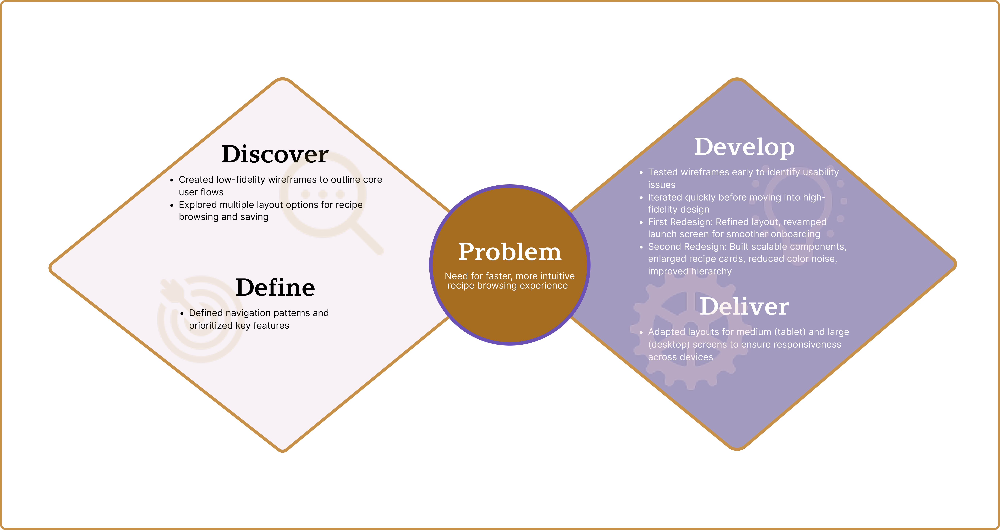
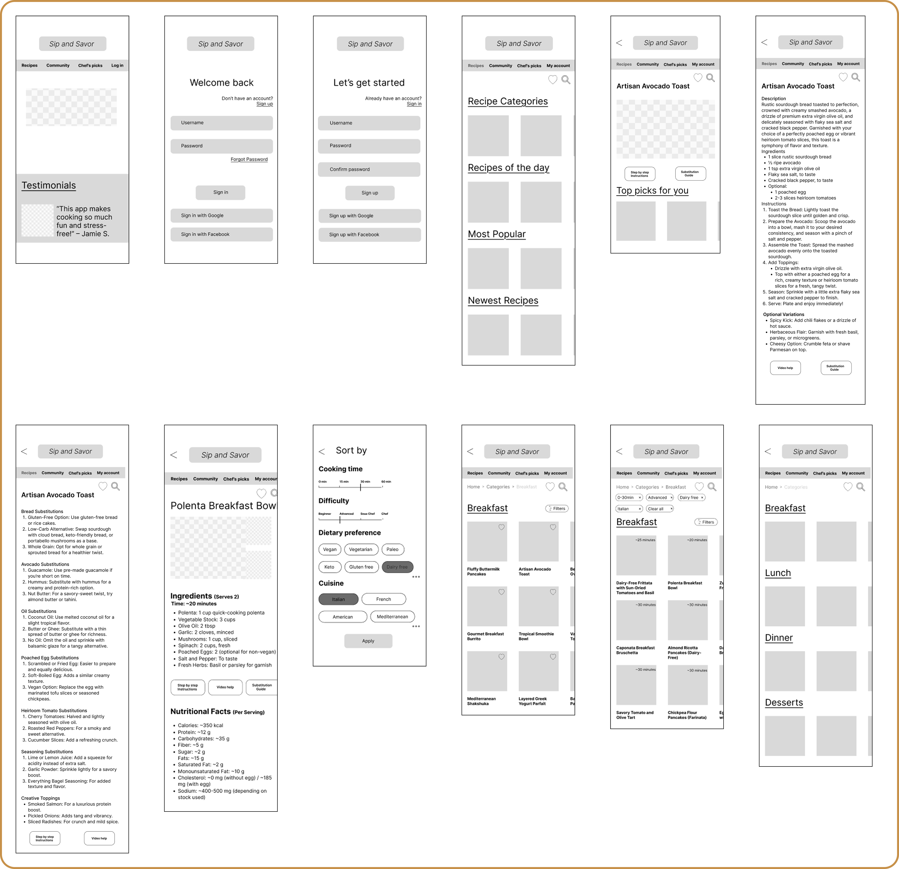
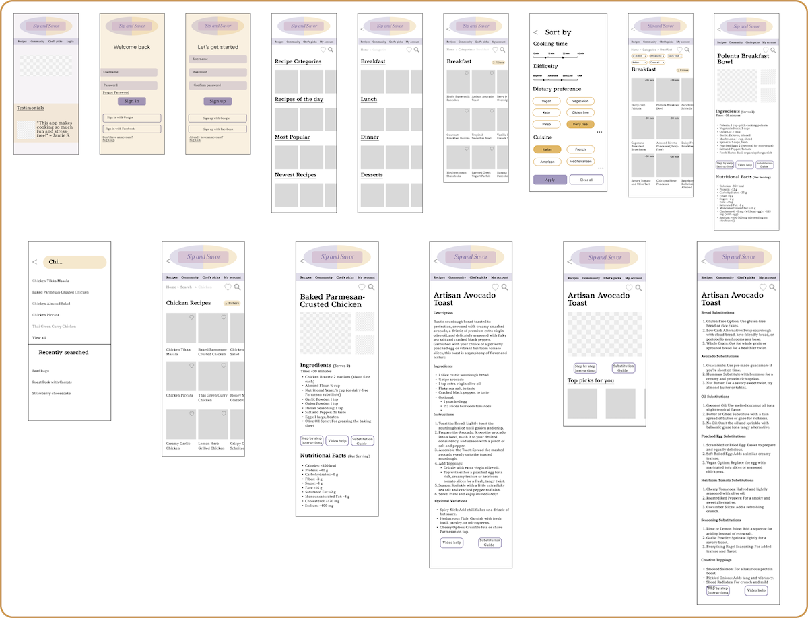

Sip and Savor
Project Overview
Sip and Savor focuses on creating a recipe app designed for busy young professionals who find meal planning and cooking stressful. Unlike many existing apps with cluttered navigation and limited flexibility, this app emphasizes quick, healthy, and easy-to-follow meals. Core features include simple navigation, recipe saving, step-by-step instructions, and smart ingredient substitutions—making cooking faster, easier, and more enjoyable.
My Role
I was responsible for end-to-end product design, including research, wireframing, visual design, and prototyping. I conducted competitive analysis, defined user needs, created scalable components, and iterated on layouts across mobile, tablet, and desktop to ensure a consistent and user-friendly experience
Problem
- Busy young professionals find meal planning and cooking time-consuming and stressful.
- Existing recipe apps lack easy navigation, quick recipe access, and flexible ingredient swaps.
Solution
- Build a recipe app with quick, healthy, easy-to-follow meals for busy professionals.
- Include simple navigation, recipe saving, step-by-step instructions, and smart ingredient substitutions.
Research
- Competitive Analysis: Reviewed 3 recipe apps to assess navigation, usability, and feature sets.
- User Research: Created personas based on interviews with professionals aged 25–40 balancing careers and personal responsibilities.
- Paper Prototype Testing: Conducted quick tests with hand-drawn flows to validate core interactions.
- A/B Testing: Compared variations of homepage layouts and recipe card designs to measure clarity and engagement.
Design Process

Design Thinking

MVP and Jobs to be Done
By focusing on essential features—like intuitive categorization, step-by-step guidance, and ingredient substitutions—the MVP will test whether these core features effectively address the target audience's pain points and drive engagement, laying the groundwork for future iterations based on user feedback.

User
Professionals aged 25 and over balancing careers, family, and personal responsibilities.
Value convenience, speed, and ease of use in daily tools and tasks.
The app is designed to support their fast-paced lifestyle with smart, intuitive features.


User Flow Diagram
The user flow is designed to ensure a seamless and intuitive experience, minimizing friction and maximizing efficiency for busy professionals. Each step in the flow supports the core needs of the target audience

Logo
The design invites the user to enjoy both food and drinks. The gold color at the center adds a touch of sophistication to the app. The logo is fully scalable to fit any screen size. All icons were custom-designed by the creator.

Moodboard
I gathered visuals, colors, and textures to capture the overall feel and guide the app’s aesthetics.


{kind=link}
{kind=link}
{kind=link}
Usability Testing with Low-Fidelity Wireframes
The goal of this test was to assess the usability of this recipe app for the first time users on a mobile and desktop device. The test was conducted in order to observe if the user can complete simple tasks such as logging in, finding a recipe and interacting with other key functionalities.

Test Findings
Issues
- Missing selected filters bar on the result page with the option of clearing the filters.
- Option for saving favorite recipes.
- Inconsistency in the bullet points on the nutritional fact section.
Suggestions
- Add a bar with chosen filters, with options to clear them if needed
- Option for saving favorite recipes
- Add a favorite icon on the recipes and create a saved recipe page.
- Fix and add the bullet points where missing
Mid-Fidelity Wireframes

Feedback loop/Peer Testing
Incorporating feedback from users throughout the design process was crucial. Peer testing sessions helped uncover usability issues, validate design decisions, and guide iterations toward a more user-friendly final product.


Summary of Iterations
This app began as my second project, created when I was still learning the basics of design. As my skills grew, I revisited it with two redesigns: first refining the layout and launch screen, then building scalable components to simplify recipe management and navigation. The result is a more modern, user-friendly app that reflects my progress as a designer.

Responsive Iterations
I iterated on tablet and desktop layouts—optimizing spacing and touch usability for medium screens, and expanding grids, visuals, and hierarchy for larger screens.

Sip and Savor Final UI(Mobile)

Reflections
- Test, test and again test...
- To gather valuable feedback, it’s important to recruit participants who reflect the app’s target audience. This can be possibly done by defining clear user criteria, leveraging social media and online communities, using screening surveys, and reaching out to personal networks. Offering incentives and partnering with food or wellness platforms can also help attract the right participants.
- Designing Sip and Savor emphasized the importance of balancing simplicity with functionality.
Next Steps
- Create personalized meal prep plan option for more tailored user experience
- Create an option with AI integration to help users utilize ingredients they have in hand
- Carry out tests to understand how users interact with the new features, as well as understand how intuitive is the app for the users outside the targeted age group, and possibly adjust to accommodate broader population